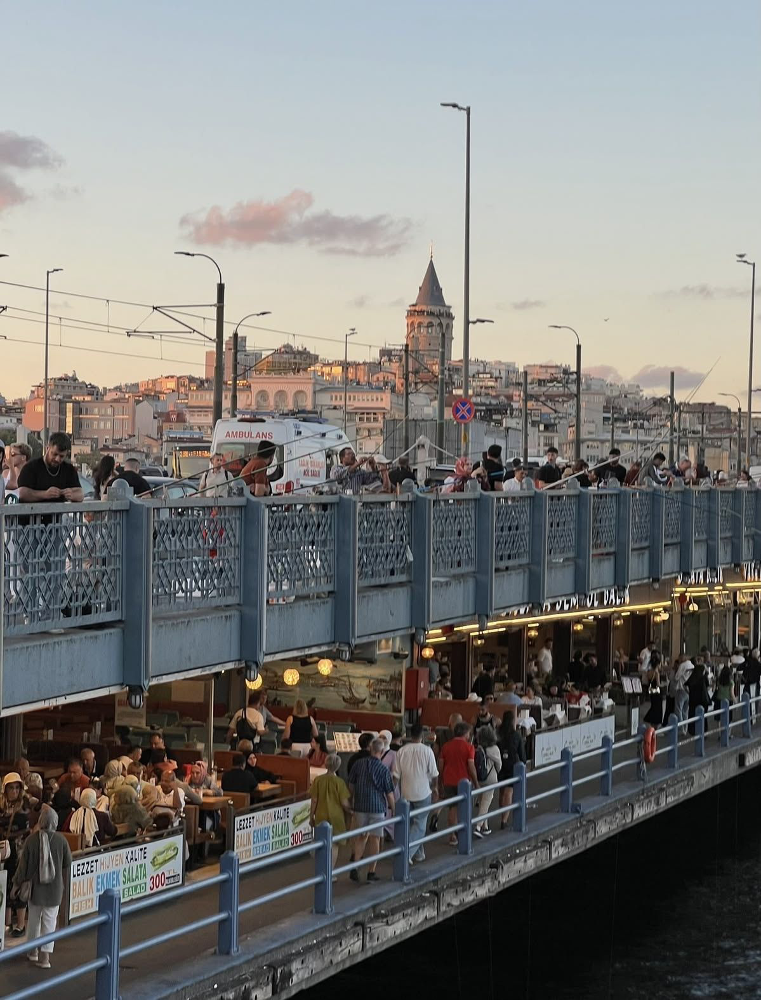

ISTANBUL

41°00′ N 28°58′ EНА БЕРЕГАХ БОСФОРА
ШЕСТЬ ДНЕЙ. ДВА КОНТИНЕНТА.У каждого
У каждого
места есть
своя история.
От портовых улиц Каракёя до деревянных вилл Бююкады. Город, который открывается тем, кто не спешит.
Начать прогулку ↗23 истории
из вашего путеводителяYAVAŞ
не спеша
из вашего путеводителяYAVAŞ
не спеша
01 / ПЛАН ПУТЕШЕСТВИЯ
Мой день в Стамбуле
Время по Стамбулу · 24–29 октября 2026Открываем расписание…
02 / ГОРОД В ДЕТАЛЯХ
Истории, которые рядом
Открываем путеводитель…
Смотрите чуть выше витрин.
Там начинается другой Стамбул.
Карнизы, старые таблички, деревянные эркеры. Самые интересные детали часто оказываются совсем рядом.
Вернуться к историям ↑03 / ВЗЯТЬ С СОБОЙ
Стамбул без интернета
Расписание, истории и фотографии для вашей поездки.
PDF · 13 СТРАНИЦ · 8,6 МБ
Расписание поездки
Ваш путеводитель на 24–29 октября с обложкой City Stories. Кликабельные маршруты Google Maps от вашего местоположения.
Скачать расписание PDF · 99 СТРАНИЦ · 35,7 МБИстории и фотографии
Ваши 23 истории и 73 фотографии. В каждом разделе сначала все фотографии места, затем полный текст истории.
Скачать книгу